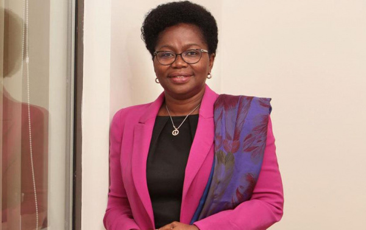
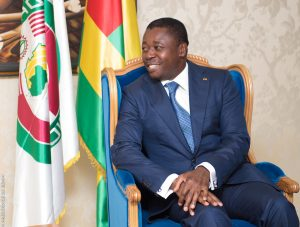
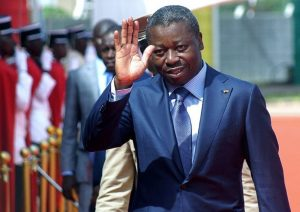

Victoire Tomegah-Dogbe Named Togo’s First Woman PM

Togo’s President Faure Gnassingbé appointed Victoire Sidémého Tomegah-Dogbé as the nation’s new prime minister Monday, making her the first woman head of government in the tiny West African state.Her appointment was announced by the nation’s presidency on television.
The new secretary-general of the presidency, Ms. Ablamba Ahoefavi Jonhson, made the announcement.Tomegah-Dogbé, 60, succeeds Komi Sélom Klassou, who on Friday resigned, together with his government.
The incoming premier, Ms. Tomegah-Dogbé, is a close confidant of President Gnassingbé and has served in his administration for over a decade.The new premier previously held the portfolio of minister of grassroots development, crafts and youth.
As the nation’s new premier, her job is cut out with a tough task ahead of governing the country at a time when it is hard hit by the global economic crisis accelerated by the coronavirus pandemic.
The World Bank announced on September 11 the release of $70 million for Togo to restore its economy, whose growth is expected to fall from 5.3% in 2019 to 1% in 2020.In Togo, poverty levels are very high and over half of the population lives below the poverty line, as per the world bank’s data and analysis.
Family Dynasty
President Faure Gnassingbe was re-elected for a fourth term in February this year, hence extending his 15-year rule and a family dynasty that was established by his father, who seized power in 1967 via a coup.He ruled Togo for 38 years.
In May 2019, the president engineered an overhaul of the nation’s constitution, paving way for him to run in February’s elections– and potentially extend his presidency until 2030.In the February elections, the president beat his closest rival and former prime minister, Agbeyome Kodjo, who protested the results, alleging vote-rigging.
Hours before the country’s local electoral commission announced the elections official results, Kodjo, who served as Togo’s prime minister under Gnassingbe’s father, announced himself as the country’s 'democratically elected president,' with between 57 and 61 percent of the vote.
Gnassingbe’s February victory gave him five more years in power, dealing a big blow to the opposition protesters, who had taken to the streets prior to the elections demanding that he step down.Faure Gnassingbé has ruled Togo, a country of 8 million inhabitants, since 2005, when he succeeded his father.
Togo is one of the world’s poorest nations.Its economy, which is figuratively on its death bed, has further been destabilized by the COVID-19 pandemic, as the authorities have imposed restrictions to limit its spread.To date, 1,743 cases of infection and 44 deaths due to the virus have been recorded in Togo.
In July, Gabon also appointed a woman as head of its government, also a first in the history of the central African country.
[bsa_pro_ad_space id=4]
Share on Facebook Tweet Follow us
Posted On: 2020-09-29T00:00:00
Posted By: Vincent Ferdinand





Content Date: 2020-09-29
Download Date: 2021-07-09
Document ID: L0C04E9TQ